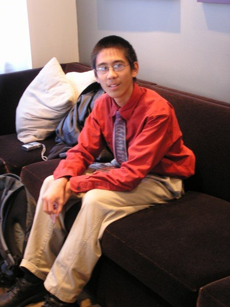
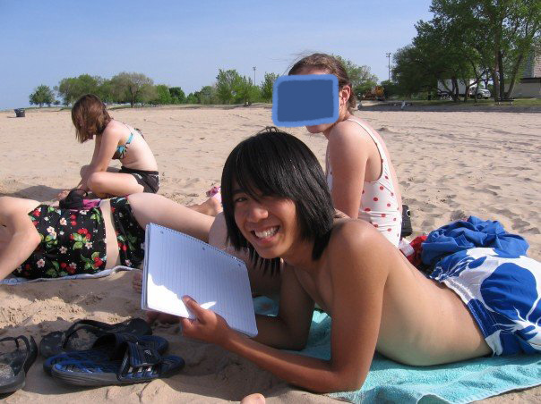
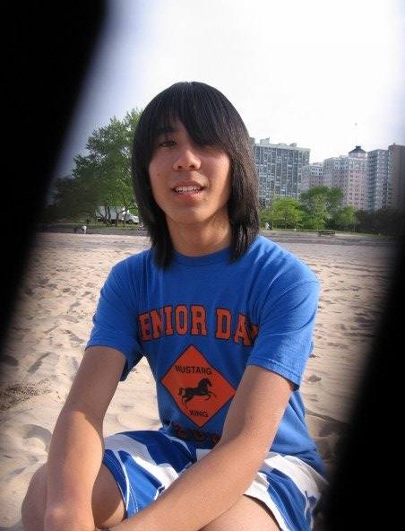
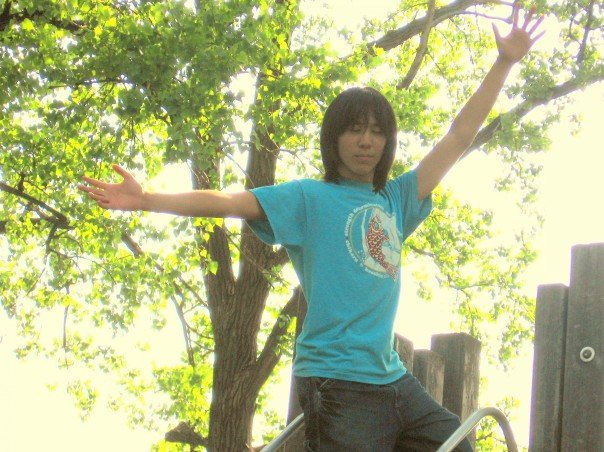
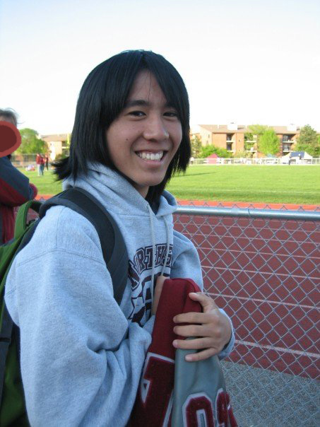
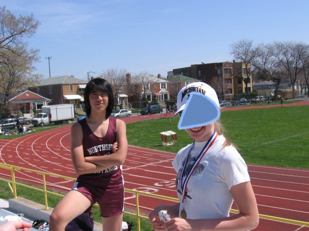
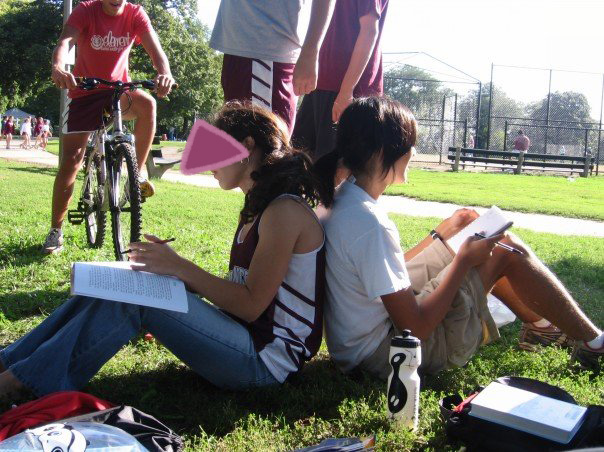
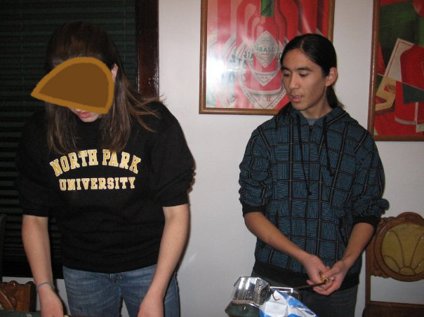
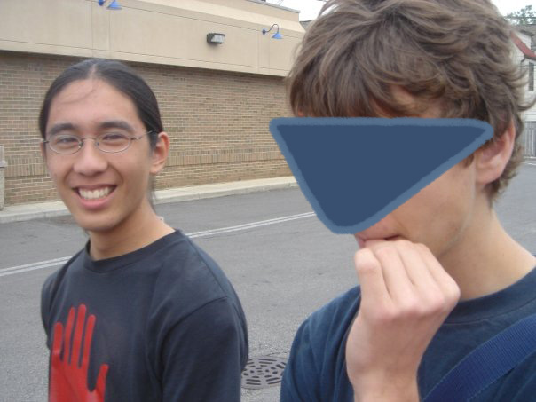

Chapter 7: Imaging, Imagining
Sweet Princess
- ---x-xXx-x--- -
I

As a tween, I know I'm nothing special. "I'm not good-looking, but that's okay!" I tell my mom one day. She is shocked. "You're very handsome!" she insists. But that's what a mother would say. I am plain and have funny ears.
In my first year of public high school, I don't really have friends I hang out with outside of school. There's a group of dorky boys I eat lunch with, and I goof off with teammates during cross country and track. I'm a weirdo, but I'm smart and good at drawing. People ask me how the transition is, switching from being homeschooled all my life. "Not bad," I say.
- ---x-xXx-x--- -
II
It's 2018. I'm scrolling through old Facebook photos, thinking about my transition. When I hit some of the earliest photos, I'm shocked to see the smooth curves of my face, the subtle delicacy of my brow. My skin glows richly, my face lacks the aggressive blue tinge of stubble.
I see a beautiful, darling girl, staring at me from the past.

I remember her. How she hated herself, how she loved herself...

How she struggled so hard to take it all in: the wonders of friendship, of longing, of being alive...

Her mind was like a tiny plastic communion cup in a Great Lake of emotion. "I've never talked to anyone like I've talked to you..." she said.

Trust in the Lord with all your heart
and lean not on your own understanding;
Proverbs 3:5, NIVDo you not know that your bodies are temples of the Holy Spirit, who is in you, whom you have received from God? You are not your own; you were bought at a price. Therefore honor God with your bodies.
1 Corinthians 6:19-20I have been crucified with Christ and I no longer live, but Christ lives in me. The life I now live in the body, I live by faith in the Son of God, who loved me and gave himself for me.
Galatians 2:20, NIV

It felt so wrong to her, to feel so strongly. Like a dark and secret sin. It wasn't her place to choose a path, to be informed by desire, to draw her own lines in the sand. This wasn't her body, this wasn't her life.

I wish I could comfort her, I wish I could comfort you. I want to help the world be better.
- ---x-xXx-x--- -
III
As time goes on, I fail to style my long hair nicely, and testosterone slowly etches itself deeper into my features. I don't really have a conceptual framework for understanding how I feel about my own appearance. Maybe that's fine.

As if I could have possibly conceived of the concept of puberty blockers at the time. Life is a journey. Life is a journey.

I am thankful for the body I have now. I am thankful for the life I live with it. I am thankful to be on HRT. What a wonderful gift.